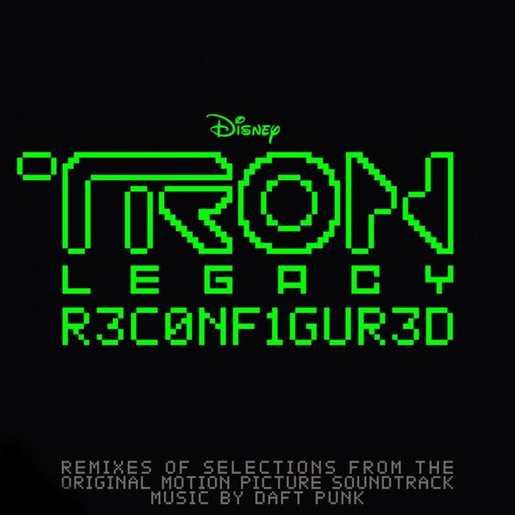

Ingredients List
- Derezzed (Remixed by The Glitch Mob) - 4:22
- Fall (Remixed by M83 VS Big Black Delta) - 3:54
- The Grid (Remixed by The Crystal Method) - 4:27
- Adagio for TRON (Remixed by Teddybears) - 5:34
- The Son of Flynn (Remixed by Ki:Theory) - 4:51
- C.L.U. (Remixed by Paul Oakenfold) - 4:35
- The Son of Flynn (Remixed by Moby) - 6:32
- End of Line (Remixed by Boys Noize) - 5:40
- Rinzler (Remixed by Kaskade) - 6:52
- Encom Part 2 (Remixed by Com Truise) - 4:52
- End of Line (Remixed by Photek) - 5:18
- Arena (Remixed by The Japanese Popstars) - 6:07
- Derezzed (Remixed by Avicii) - 5:03
- Solar Sailer (Remixed by Pretty Lights) - 4:32
- TRON Legacy (End Titles) [Remixed by Sander Kleinenberg] - 5:04
Taste Our Coffee Here: